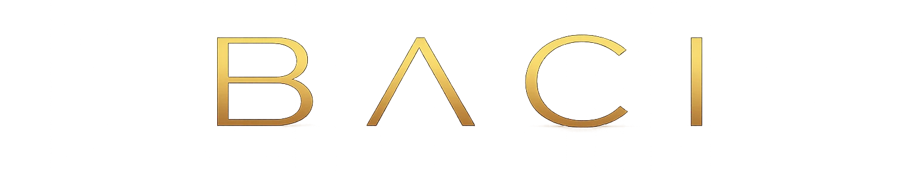
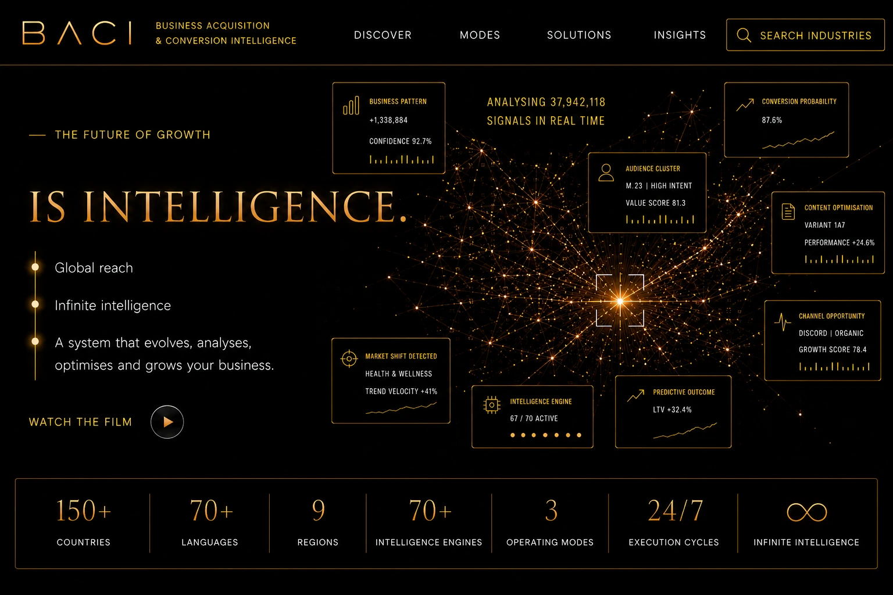
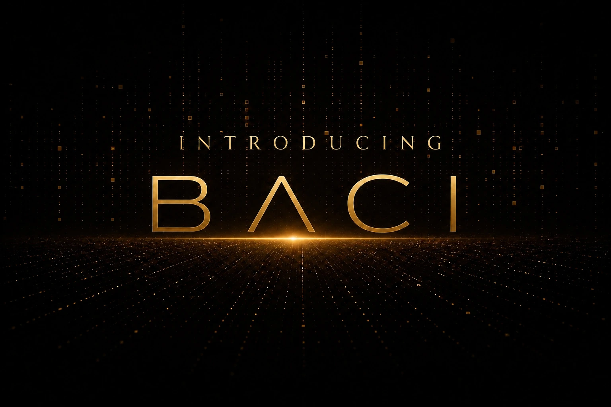
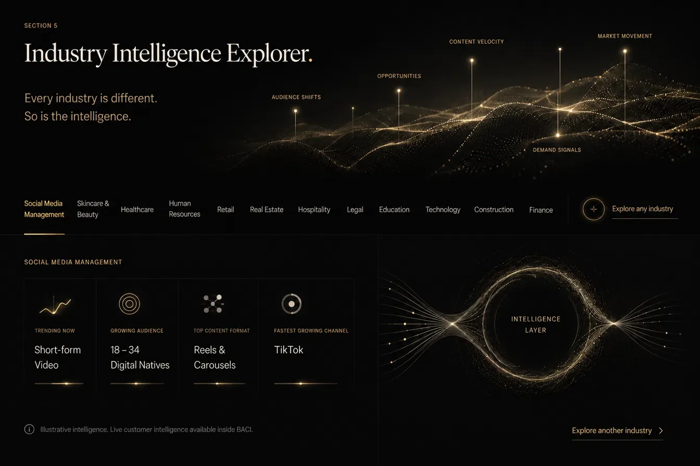

BACI Discover Modes Solutions Insights Search industries Business pattern Conversion probability Audience cluster Content optimisation Channel opportunity Market shift detected Intelligence engine Predictive outcome Countries Languages Regions Intelligence engines Operating modes Execution cycles Infinite intelligence
The world has never generated more data, more signals, more intelligence, or more opportunity. And yet most organisations have never felt more uncertain about where to focus, where to invest, and where to grow. Not because the information isn't there. Because the intelligence isn't.
BACI was built for this moment. To take everything a business needs to acquire customers, convert opportunities and grow revenue, and bring it together into one continuously evolving intelligence system that never stops analysing, never stops adapting, and never stops working.
BACI doesn't just tell you what is happening. It tells you what it means, what to do about it, and what happens next.
The organisations that will define their markets in the next decade will not be the ones with the most tools. They will be the ones with the clearest intelligence. BACI exists to help you become that organisation.
Connect your business Performance
Distribution
Conversion
Creator
Acquisition
Affiliate
Campaign
Audience
Content
Behavioural
Investors and funding
Performance
Distribution
Conversion
Creator
Acquisition
Affiliate
Campaign
Audience
Content
Behavioural
Investors and funding
Select any capability to see how BACI applies intelligence to it. Select it again to return to the overview.
The BACI Executive Intelligence Library brings together executive briefings, commercial insight, strategic guidance, and research across the disciplines that shape successful organisations.
From business planning and international expansion to financial forecasting, procurement, grant funding, market intelligence, and executive decision-making, the library is designed to help organisations think more strategically, act with greater confidence, and achieve sustainable growth through continuously evolving intelligence.
Connect your business
Social media management Skincare and beauty Healthcare Human resources Retail Real estate Hospitality Legal Education Technology Construction Finance Explore any industryData has never been more abundant.
Every day organisations generate customer interactions, campaign results, financial reports, operational metrics, market movements, competitor activity, and behavioural signals across dozens of disconnected systems.
The challenge is no longer collecting information. It is understanding what matters, recognising what is changing, and knowing what to do next.
Without intelligence, more data creates more complexity. With intelligence, the same data becomes direction, confidence, and opportunity.
BACI transforms overwhelming volumes of information into clear, actionable intelligence, helping organisations make faster decisions, reduce uncertainty, and uncover opportunities that would otherwise remain hidden.
Connect your business
Most organisations already possess the information they need to grow.
What they often lack is the confidence to know which customers to prioritise, which markets to enter, which campaigns to launch, which investments to make, and which opportunities will create the greatest return.
Intelligence removes uncertainty.
By continuously analysing data, recognising patterns, identifying opportunities, and predicting outcomes, BACI transforms information into clarity — helping organisations move forward with greater confidence and greater precision.
When certainty improves, decisions improve. When decisions improve, performance follows.
Connect your businessWhat if every important decision was supported by continuously evolving intelligence?
What if you could identify opportunities before your competitors?
What if you understood not only what happened, but why it happened — and what to do next?
What if your organisation could acquire customers more intelligently, convert opportunities more consistently, and grow with greater confidence?
That future isn't years away. It's available today.
Welcome to BACI.
Connect your businessSome ideas are better experienced than explained.
Discover how BACI transforms data into intelligence, intelligence into action, and action into measurable business growth.
In just a few minutes, you'll see how one continuously evolving intelligence platform helps organisations acquire customers, convert opportunities, optimise performance, and grow with greater confidence.
However you choose to engage, BACI provides the intelligence organisations, developers, affiliates, agencies, technology partners and independent professionals need to make better decisions.